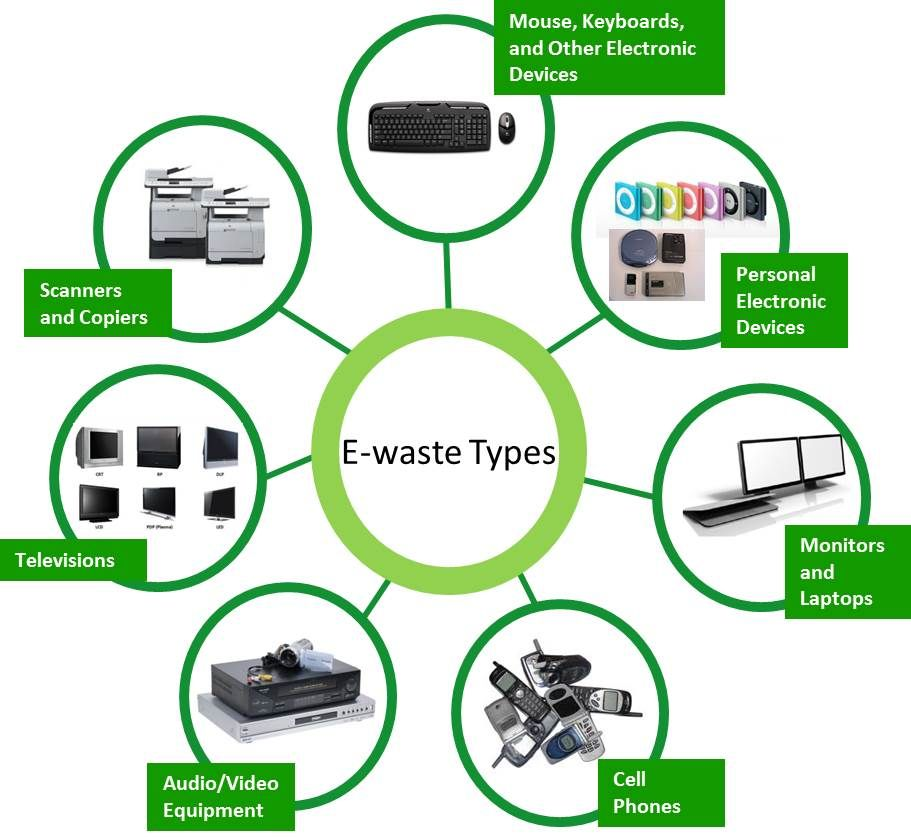
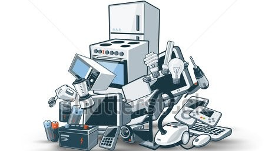
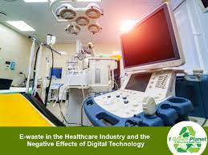
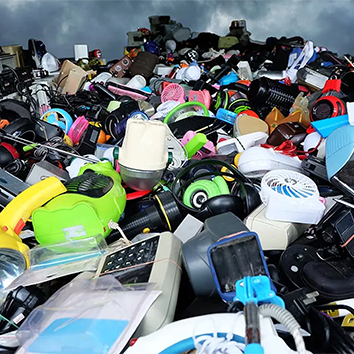

Types of Electronic Waste:
You can’t ignore the fact that there is a lot of waste worldwide, and the amount is unstoppable.
But if you see the amount of waste that has increased the most, it is electronic waste. For garbage like this,
it is usually divided into these seven types:

1. ICT and Telecommunications Equipment:
Items classified into ICT include CPUs, screens, monitors, mice, printers,
keyboards, networking equipment, laptops, audio amplifiers, CDs, DVDs, and video cameras.
And this number is arguably the most in the current era because it is the easiest to obtain.

2. Office Electronics:
Office use and the amount of trash in the world seem to be a problem.
Office electronics include calculators, photocopying equipment, electronical, typewriters, telephones, fax machines, and facsimiles if they are still in the office.
.jpeg)
3.Consumer Equipment:
Items used for consumer use will also be included in the electronic waste sector. This category for consumers is all forms of activity that will be important to serve consumers.
Many activities fall into this category.
.jpeg)
4. Medical Equipment:
And there are still many who are not aware that this waste is also included in medical matters. If this is added up, it can be calculated how much the amount of waste is.
So, electronic equipment is involved in injury, treatment, prevention, and detection activities.

5. Toys Leisure and Sports Equipment:
As kids grow older, of course, there are toys or games that they no longer use. And there must be some of those items that belong to electronics. If there is only one electronic component, such as a battery, in the toy, then it is classified as e-waste as well.
The problems in our homes are not only in the security sector but also related to environmental issues. Garbage, which is increasing over time, has become the most common issue today.
And you see a lot about the types of electronic waste circulating.

Common items of electrical and electronic waste are
- Large household appliances (refrigerators/freezers, washing machines, dishwashers)
- Small household appliances (toasters, coffee makers, irons, hairdryers)
- Information technology (IT) and telecommunications equipment (personal computers, telephones, mobile phones, laptops, printers, scanners, photocopiers)
- Consumer equipment (televisions, stereo equipment, electric toothbrushes)
- Lighting equipment (fluorescent lamps)
- Electrical and electronic tools (handheld drills, saws, screwdrivers)
Toys, leisure and sports equipment
- Medical equipment systems (with the exception of all implanted and infected products)
- Monitoring and control instruments
- Automatic dispensers